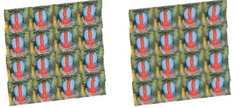
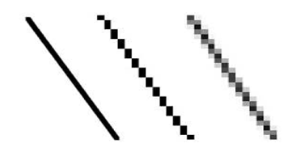

Q6.Explain Aliasing and Antialiasing techniques?
Ans:
Aliasing:
- A problem with high resolution texturing is aliasing, which occurs when adjacent pixels in a rendered image are sampled from pixels that are far apart in a texture image.
- By down-sampling— reducing the size of a texture—aliasing can be reduced for far away or small objects, but then textured objects look blurry when close to the viewer.
- What we really want is a high resolution texture for nearby viewing, and down-sampled textures for distant viewing.
- A technique called mip-mapping gives us this by pre-rendering a texture image at several different scales.
- For example, a 256 × 256 image might be down-sampled to 128 × 128, 64 × 64, 32 × 32, 16 × 16, and so on.
- Then it is up to the renderer to select the correct mipmap to reduce aliasing artifacts at the scale of the rendered texture.

Antialiasing:
- Antialiasing is a term for techniques that are designed to mitigate the effects of aliasing.
- The idea is that when a pixel is only partially covered by a shape, the color of the pixel should bea mixture of the color of the shape and the color of the background.
- When drawing a black lineon a white background, the color of a partially covered pixel would be gray, with the shade ofgray depending on the fraction of the pixel that is covered by the line.
- Here, for example, is a geometric line, shown on the left, along with two approximations of thatline made by coloring pixels. The lines are greatly magnified so that you can see the individualpixels.
- The line on the right is drawn using antialiasing, while the one in the middle is not:

Methods of Anti-aliasing:
Basically, there are only three main methods of anti-aliasing:
- Super-sampling
- Multisampling
- Post-Processing
- Post-Processing
Post-Processing
- Postfiltering, also known as super sampling is the more popular approach to antialiasing.
- For each displayed pixel, a postfiltering method takes several samples from the scene and computes an average of the samples to determine the pixel's color.
- The two steps in the postfiltering process are:
- Sample the scene at n times the display resolution. For example, suppose the display resolution is 512 × 512. Sampling at three times the width and three times the height of the display resolution would yield 1536 × 1536 samples.
- The color of each pixel in the rendered image will be an average of several samples. For example, if sampling were performed at three times the width and three times the height of the display resolution, then a pixel's color would be an average of nine samples. A filter provides the weights used to compute the average.